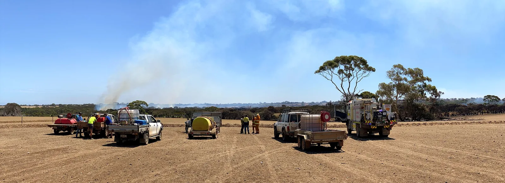
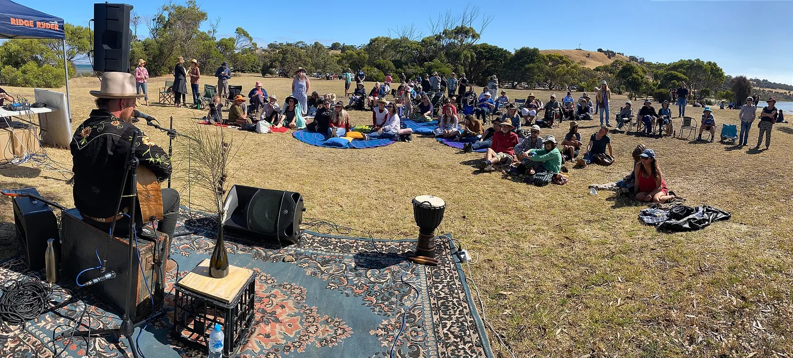

S17 · Sur
S17 · Süden
S17 · South
Sudeste australiano
Información
Information
Information
Vi en Australia un verano de fuego que mató o dejó sin casa a tres mil millones de animales.
Ich sah in Australien einen Sommer aus Feuer, der drei Milliarden Tiere tötete oder obdachlos machte.
In Australia I saw a summer of fire that killed or left homeless three billion animals.
Los incendios de 2019-2020 en Australia mataron o desplazaron a casi tres mil millones de animales: 143 millones de mamíferos, 2.460 millones de reptiles, 180 millones de aves y 51 millones de anfibios. El equipo que hizo el cálculo analizó un área afectada de 11,46 millones de hectáreas; en total llegaron a arder hasta 19 millones, de las cuales 12,6 eran bosque y monte.
El informe, dirigido por Lily van Eeden y supervisado por Chris Dickman, de la Universidad de Sídney, fue el primer recuento de este tipo a escala continental que se hizo en el mundo.
Los incendios de 2019-2020 en Australia mataron o desplazaron a casi tres mil millones de animales: 143 millones de mamíferos, 2.460 millones de reptiles, 180 millones de aves y 51 millones de anfibios. El equipo que hizo el cálculo analizó un área afectada de 11,46 millones de hectáreas; en total llegaron a arder hasta 19 millones, de las cuales 12,6 eran bosque y monte.
El informe, dirigido por Lily van Eeden y supervisado por Chris Dickman, de la Universidad de Sídney, fue el primer recuento de este tipo a escala continental que se hizo en el mundo.
Los incendios de 2019-2020 en Australia mataron o desplazaron a casi tres mil millones de animales: 143 millones de mamíferos, 2.460 millones de reptiles, 180 millones de aves y 51 millones de anfibios. El equipo que hizo el cálculo analizó un área afectada de 11,46 millones de hectáreas; en total llegaron a arder hasta 19 millones, de las cuales 12,6 eran bosque y monte.
El informe, dirigido por Lily van Eeden y supervisado por Chris Dickman, de la Universidad de Sídney, fue el primer recuento de este tipo a escala continental que se hizo en el mundo.
Galería
Galerie
Gallery


Fuentes
Quellen
Sources
- WWF-Australia, Australia's 2019-2020 Bushfires: The Wildlife Toll (informe) — https://www.wwf.org.au/what-we-do/bushfire-recovery/in-depth/resources/australia-s-2019-2020-bushfires-the-wildlife-toll consultado 2026-10-05abgerufen 2026-10-05accessed 2026-10-05
- WWF-Australia, 3 billion animals impacted by Australia's bushfire crisis — https://wwf.org.au/news/2020/3-billion-animals-impacted-by-australia-bushfire-crisis/ consultado 2026-10-05abgerufen 2026-10-05accessed 2026-10-05